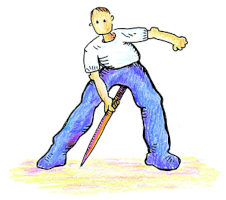

El terreno será de tierra apisonada y ceniza.

La barra será de hierro homogéneo.
La barrá será de 75cm y su punta 12cm.
La barra pesará al menos 5kg.
Se efectuarán 3 lanzamientos por jugador.
La barra ha de caer paralela al terreno para ser válido.
La medición se hace desde la punta más próxima al origen.

Habrá 3 jueces: de Lanzamiento, de Medición y Anotador.

Las dimensiones de la barra podrán variar en con la categoría.